Java调优经验谈
目录
- 调优准备
- 性能分析
- 性能调优
- 其他优化建议
- JVM参数进阶
对于调优这个事情来说，一般就是三个过程：
- 性能监控：问题没有发生，你并不知道你需要调优什么。此时需要一些系统、应用的监控工具来发现问题。
- 性能分析：问题已经发生，但是你并不知道问题到底出在哪里。此时就需要使用工具、经验对系统、应用进行瓶颈分析，以求定位到问题原因。
- 性能调优：经过上一步的分析定位到了问题所在，需要对问题进行解决，使用代码、配置等手段进行优化。
Java调优也不外乎这三步。
此外，本文所讲的性能分析、调优等是抛开以下因素的：
调优是需要做好准备工作的，毕竟每一个应用的业务目标都不尽相同，性能瓶颈也不会总在同一个点上。在业务应用层面，我们需要：
- 需要了解系统的总体架构，明确压力方向。比如系统的哪一个接口、模块是使用率最高的，面临高并发的挑战。
- 需要构建测试环境来测试应用的性能，使用ab、loadrunner、jmeter都可以。
- 对关键业务数据量进行分析，这里主要指的是对一些数据的量化分析，如数据库一天的数据量有多少；缓存的数据量有多大等
- 了解系统的响应速度、吞吐量、TPS、QPS等指标需求，比如秒杀系统对响应速度和QPS的要求是非常高的。
- 了解系统相关软件的版本、模式和参数等，有时候限于应用依赖服务的版本、模式等，性能也会受到一定的影响。
性能分析
在系统层面能够影响应用性能的一般包括三个因素：CPU、内存和IO，可以从这三方面进行程序的性能瓶颈分析。CPU分析
当程序响应变慢的时候，首先使用top、vmstat、ps等命令查看系统的cpu使用率是否有异常，从而可以判断出是否是cpu繁忙造成的性能问题。其中，主要通过us（用户进程所占的%）这个数据来看异常的进程信息。当us接近100%甚至更高时，可以确定是cpu繁忙造成的响应缓慢。一般说来，cpu繁忙的原因有以下几个： - 线程中有无限空循环、无阻塞、正则匹配或者单纯的计算
- 发生了频繁的gc
- 多线程的上下文切换
确定好cpu使用率最高的进程之后就可以使用jstack来打印出异常进程的堆栈信息：
jstack [pid]
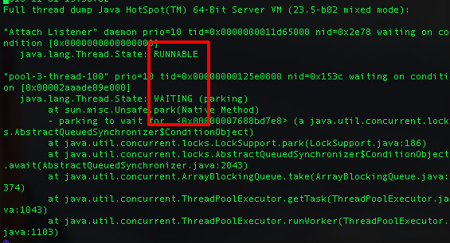 接下来需要注意的一点是，Linux下所有线程最终还是以轻量级进程的形式存在系统中的，而使用jstack只能打印出进程的信息，这些信息里面包含了此进程下面所有线程（轻量级进程-LWP）的堆栈信息。因此，进一步的需要确定是哪一个线程耗费了大量CPU，此时可以使用top -p [processId] -H来查看，也可以直接通过ps -Le来显示所有进程,包括LWP的资源耗费信息。最后，通过在jstack的输出文件中查找对应的LWP的id即可以定位到相应的堆栈信息。其中需要注意的是线程的状态：RUNNABLE、WAITING等。对于Runnable的进程需要注意是否有耗费cpu的计算。对于Waiting的线程一般是锁的等待操作。
也可以使用jstat来查看对应进程的gc信息，以判断是否是gc造成了cpu繁忙。
jstat -gcutil [pid]
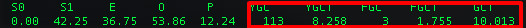 还可以通过vmstat，通过观察内核状态的上下文切换(cs)次数，来判断是否是上下文切换造成的cpu繁忙。
vmstat 1 5
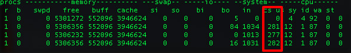 此外，有时候可能会由jit引起一些cpu飚高的情形，如大量方法编译等。这里可以使用-XX:+PrintCompilation这个参数输出jit编译情况，以排查jit编译引起的cpu问题。
内存分析
对Java应用来说，内存主要是由堆外内存和堆内内存组成。
堆外内存
堆外内存主要是JNI、Deflater/Inflater、DirectByteBuffer（nio中会用到）使用的。对于这种堆外内存的分析，还是需要先通过vmstat、sar、top、pidstat(这里的sar,pidstat以及iostat都是sysstat软件套件的一部分，需要单独安装)等查看swap和物理内存的消耗状况再做判断的。此外，对于JNI、Deflater这种调用可以通过Google-preftools来追踪资源使用状况。
堆内内存
此部分内存为Java应用主要的内存区域。通常与这部分内存性能相关的有：
- 创建的对象：这个是存储在堆中的，需要控制好对象的数量和大小，尤其是大的对象很容易进入老年代
- 全局集合：全局集合通常是生命周期比较长的，因此需要特别注意全局集合的使用
- 缓存：缓存选用的数据结构不同，会很大程序影响内存的大小和gc
- ClassLoader：主要是动态加载类容易造成永久代内存不足
- 多线程：线程分配会占用本地内存，过多的线程也会造成内存不足 以上使用不当很容易造成：
- 频繁GC -> Stop the world，使你的应用响应变慢
- OOM，直接造成内存溢出错误使得程序退出。OOM又可以分为以下几种：
- Heap space：堆内存不足
- PermGen space：永久代内存不足
- Native thread：本地线程没有足够内存可分配 排查堆内存问题的常用工具是jmap，是jdk自带的。一些常用用法如下：
- 查看jvm内存使用状况：jmap -heap
- 查看jvm内存存活的对象：jmap -histo:live
- 把heap里所有对象都dump下来，无论对象是死是活：jmap -dump:format=b,file=xxx.hprof
- 先做一次full GC，再dump，只包含仍然存活的对象信息：jmap -dump:format=b,live,file=xxx.hprof
此外，不管是使用jmap还是在OOM时产生的dump文件，可以使用Eclipse的MAT(MEMORY ANALYZER TOOL)来分析，可以看到具体的堆栈和内存中对象的信息。当然jdk自带的jhat也能够查看dump文件(启动web端口供开发者使用浏览器浏览堆内对象的信息)。此外，VisualVM也能够打开hprof文件，使用它的heap walker查看堆内存信息。
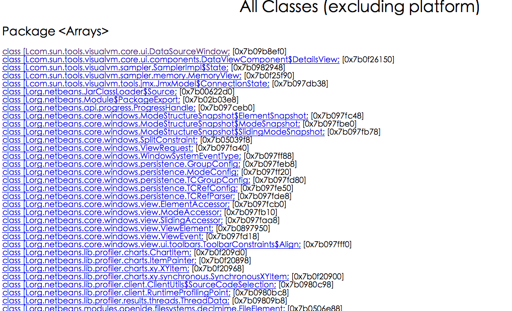
IO分析
通常与应用性能相关的包括：文件IO和网络IO。文件IO
可以使用系统工具pidstat、iostat、vmstat来查看io的状况。这里可以看一张使用vmstat的结果图。 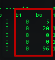 这里主要注意bi和bo这两个值，分别表示块设备每秒接收的块数量和块设备每秒发送的块数量，由此可以判定io繁忙状况。进一步的可以通过使用strace工具定位对文件io的系统调用。通常，造成文件io性能差的原因不外乎： - 大量的随机读写
- 设备慢
- 文件太大
网络IO
查看网络io状况，一般使用的是netstat工具。可以查看所有连接的状况、数目、端口信息等。例如：当time_wait或者close_wait连接过多时，会影响应用的相应速度。
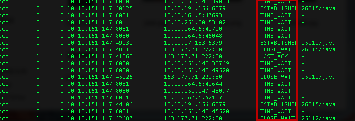 此外，还可以使用tcpdump来具体分析网络io的数据。当然，tcpdump出的文件直接打开是一堆二进制的数据，可以使用wireshark阅读具体的连接以及其中数据的内容。netstat -anp
还可以通过查看/proc/interrupts来获取当前系统使用的中断的情况。 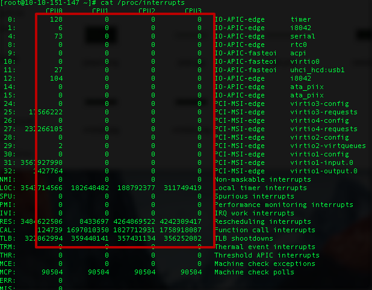 各个列依次是：tcpdump -i eth0 -w tmp.cap -tnn dst port 8080 #监听8080端口的网络请求并打印日志到tmp.cap中
通过查看网卡设备的终端情况可以判断网络io的状况。irq的序号， 在各自cpu上发生中断的次数，可编程中断控制器，设备名称（request_irq的dev_name字段）其他分析工具
上面分别针对CPU、内存以及IO讲了一些系统/JDK自带的分析工具。除此之外，还有一些综合分析工具或者框架可以更加方便我们对Java应用性能的排查、分析、定位等。VisualVM
这个工具应该是Java开发者们非常熟悉的一款java应用监测工具，原理是通过jmx接口来连接jvm进程，从而能够看到jvm上的线程、内存、类等信息。 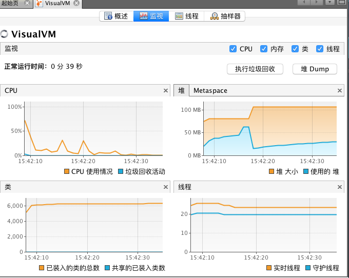 进一步查看gc情况，可以安装visual gc插件。此外，visualvm也有btrace的插件，可以可视化直观的编写btrace代码并查看输出日志。 与VisualVm类似的，jconsole也是通过jmx查看远程jvm信息的一款工具，更进一步的，通过它还可以显示具体的线程堆栈信息以及内存中各个年代的占用情况，也支持直接远程执行MBEAN。当然，visualvm通过安装jconsole插件也可以拥有这些功能 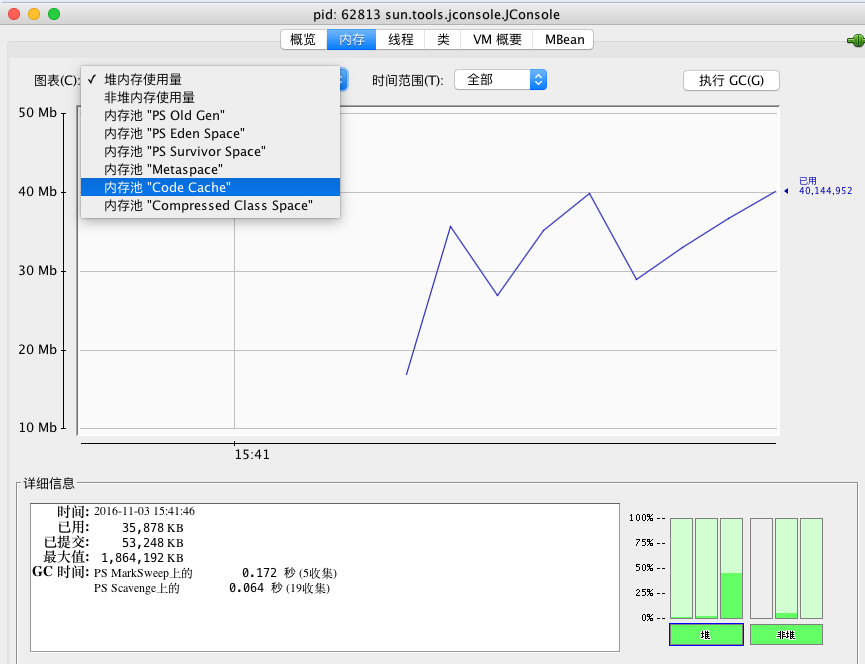 但由于这俩工具都是需要ui界面的，因此一般都是通过本地远程连接服务器jvm进程。服务器环境下，一般并不用此种方式。Java Mission Control(jmc)
此工具是jdk7 u40开始自带的，原来是JRockit上的工具，是一款采样型的集诊断、分析和监控与一体的非常强大的工具: https://docs.oracle.com/javacomponents/jmc-5-5/jmc-user-guide/toc.htm。但是此工具是基于JFR(jcmd JFR.start name=test duration=60s settings=template.jfc filename=output.jfr)的，而开启JFR需要商业证书：jcmd VM.unlock_commercial_features。 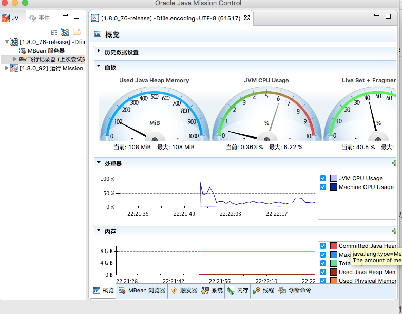Btrace
这里不得不提的是btrace这个神器，它使用java attach api+ java agent + instrument api能够实现jvm的动态追踪。在不重启应用的情况下可以加入拦截类的方法以打印日志等。具体的用法可以参考Btrace入门到熟练小工完全指南。Jwebap
Jwebap是一款JavaEE性能检测框架，基于asm增强字节码实现。支持：http请求、jdbc连接、method的调用轨迹跟踪以及次数、耗时的统计。由此可以获取最耗时的请求、方法，并可以查看jdbc连接的次数、是否关闭等。但此项目是2006年的一个项目，已经将近10年没有更新。根据笔者使用，已经不支持jdk7编译的应用。如果要使用，建议基于原项目二次开发，同时也可以加入对redis连接的轨迹跟踪。当然，基于字节码增强的原理，也可以实现自己的JavaEE性能监测框架。 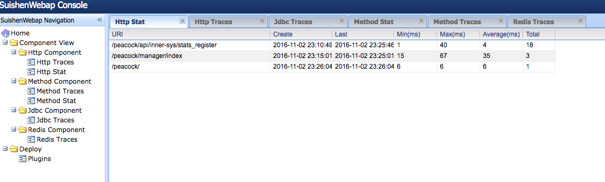 上图来自二次开发过的jwebap，已经支持jdk8和redis连接追踪。
useful-scripts
开源项目：https://github.com/superhj1987/useful-scripts 封装了很多常用的性能分析命令，比如上文讲的打印繁忙java线程堆栈信息，只需要执行一个脚本即可。
性能调优
与性能分析相对应，性能调优同样分为三部分。
CPU调优
- 不要存在一直运行的线程(无限while循环)，可以使用sleep休眠一段时间。这种情况普遍存在于一些pull方式消费数据的场景下，当一次pull没有拿到数据的时候建议sleep一下，再做下一次pull。
- 轮询的时候可以使用wait/notify机制
- 避免循环、正则表达式匹配、计算过多，包括使用String的format、split、replace方法(可以使用apache的commons-lang里的StringUtils对应的方法)，使用正则去判断邮箱格式(有时候会造成死循环)、序列/反序列化等。
- 结合jvm和代码，避免产生频繁的gc，尤其是full GC。 此外，使用多线程的时候，还需要注意以下几点：
- 使用线程池，减少线程数以及线程的切换
- 多线程对于锁的竞争可以考虑减小锁的粒度(使用ReetrantLock)、拆分锁(类似ConcurrentHashMap分bucket上锁), 或者使用CAS、ThreadLocal、不可变对象等无锁技术。此外，多线程代码的编写最好使用jdk提供的并发包、Executors框架以及ForkJoin等，此外Discuptor和Actor在合适的场景也可以使用。
内存调优
内存的调优主要就是对jvm的调优。
- 合理设置各个代的大小。避免新生代设置过小(不够用，经常minor gc并进入老年代)以及过大(会产生碎片)，同样也要避免Survivor设置过大和过小。
- 选择合适的GC策略。需要根据不同的场景选择合适的gc策略。这里需要说的是，cms并非全能的。除非特别需要再设置，毕竟cms的新生代回收策略parnew并非最快的，且cms会产生碎片。此外，G1直到jdk8的出现也并没有得到广泛应用，并不建议使用。
- jvm启动参数配置-XX:+PrintGCDetails -XX:+PrintGCDateStamps -Xloggc:[log_path]，以记录gc日志，便于排查问题。 其中，对于第一点，具体的还有一点建议：
- 年轻代大小选择：响应时间优先的应用，尽可能设大，直到接近系统的最低响应时间限制（根据实际情况选择）。在此种情况下，年轻代收集发生gc的频率是最小的。同时，也能够减少到达年老代的对象。吞吐量优先的应用，也尽可能的设置大，因为对响应时间没有要求，垃圾收集可以并行进行，建议适合8CPU以上的应用使用。
- 年老代大小选择：响应时间优先的应用，年老代一般都是使用并发收集器，所以其大小需要小心设置，一般要考虑并发会话率和会话持续时间等一些参数。如果堆设置小了，会造成内存碎片、高回收频率以及应用暂停而使用传统的标记清除方式；如果堆大了，则需要较长的收集时间。最优化的方案，一般需要参考以下数据获得：
- 并发垃圾收集信息
- 持久代并发收集次数
- 传统GC信息
- 花在年轻代和年老代回收上的时间比例 一般吞吐量优先的应用都应该有一个很大的年轻代和一个较小的年老代。这样可以尽可能回收掉大部分短期对象，减少中期的对象，而年老代存放长期存活对象。 此外，较小堆引起的碎片问题：因为年老代的并发收集器使用标记、清除算法，所以不会对堆进行压缩。当收集器回收时，会把相邻的空间进行合并，这样可以分配给较大的对象。但是，当堆空间较小时，运行一段时间以后，就会出现“碎片”，如果并发收集器找不到足够的空间，那么并发收集器将会停止，然后使用传统的标记、清除方式进行回收。如果出现“碎片”，可能需要进行如下配置：-XX:+UseCMSCompactAtFullCollection，使用并发收集器时，开启对年老代的压缩。同时使用-XX:CMSFullGCsBeforeCompaction=xx设置多少次Full GC后，对年老代进行压缩。
其余对于jvm的优化问题可见后面JVM参数进阶一节。
代码上，也需要注意：
- 避免保存重复的String对象，同时也需要小心String.subString()与String.intern()的使用，尤其是后者其底层数据结构为StringTable，当字符串大量不重复时，会使得StringTable非常大(一个固定大小的hashmap，可以由参数-XX:StringTableSize=N设置大小)，从而影响young gc的速度。在jackson和fastjson中使用了此方法，某些场景下会引起gc问题: YGC越来越慢，为什么。
- 尽量不要使用finalizer
- 释放不必要的引用：ThreadLocal使用完记得释放以防止内存泄漏，各种stream使用完也记得close。
- 使用对象池避免无节制创建对象，造成频繁gc。但不要随便使用对象池，除非像连接池、线程池这种初始化/创建资源消耗较大的场景，
- 缓存失效算法，可以考虑使用SoftReference、WeakReference保存缓存对象
- 谨慎热部署/加载的使用，尤其是动态加载类等
- 不要用Log4j输出文件名、行号，因为Log4j通过打印线程堆栈实现，生成大量String。此外，使用log4j时，建议此种经典用法，先判断对应级别的日志是否打开，再做操作，否则也会生成大量String。
if (logger.isInfoEnabled()) { logger.info(msg); }IO调优
文件IO上需要注意：
- 考虑使用异步写入代替同步写入，可以借鉴redis的aof机制。
- 利用缓存，减少随机读
- 尽量批量写入，减少io次数和寻址
- 使用数据库代替文件存储 网络IO上需要注意：
- 和文件IO类似，使用异步IO、多路复用IO/事件驱动IO代替同步阻塞IO
- 批量进行网络IO,减少IO次数
- 使用缓存，减少对网络数据的读取
- 使用协程: Quasar
其他优化建议
- 算法、逻辑上是程序性能的首要，遇到性能问题，应该首先优化程序的逻辑处理
- 优先考虑使用返回值而不是异常表示错误
- 查看自己的代码是否对内联是友好的: 你的Java代码对JIT编译友好么？ 此外，jdk7、8在jvm的性能上做了一些增强：
- 通过-XX:+TieredCompilation开启JDK7的多层编译（tiered compilation）支持。多层编译结合了客户端C1编译器和服务端C2编译器的优点(客户端编译能够快速启动和及时优化，服务器端编译可以提供更多的高级优化)，是一个非常高效利用资源的切面方案。在开始时先进行低层次的编译，同时收集信息，在后期再进一步进行高层次的编译进行高级优化。需要注意的一点：这个参数会消耗比较多的内存资源，因为同一个方法被编译了多次，存在多份native内存拷贝，建议把code cache调大一点儿（-XX:+ReservedCodeCacheSize，InitialCodeCacheSize）。否则有可能由于code cache不足，jit编译的时候不停的尝试清理code cache，丢弃无用方法，消耗大量资源在jit线程上。
- Compressed Oops：压缩指针在jdk7中的server模式下已经默认开启。
- Zero-Based Compressed Ordinary Object Pointers：当使用了上述的压缩指针时，在64位jvm上，会要求操作系统保留从一个虚拟地址0开始的内存。如果操作系统支持这种请求，那么就开启了Zero-Based Compressed Oops。这样可以使得无须在java堆的基地址添加任何地址补充即可把一个32位对象的偏移解码成64位指针。
- 逃逸分析(Escape Analysis): Server模式的编译器会根据代码的情况，来判断相关对象的逃逸类型，从而决定是否在堆中分配空间，是否进行标量替换(在栈上分配原子类型局部变量)。此外，也可以根据调用情况来决定是否自动消除同步控制，如StringBuffer。这个特性从Java SE 6u23开始就默认开启。
- NUMA Collector Enhancements：这个重要针对的是The Parallel Scavenger垃圾回收器。使其能够利用NUMA (Non Uniform Memory Access，即每一个处理器核心都有本地内存，能够低延迟、高带宽访问) 架构的机器的优势来更快的进行gc。可以通过-XX:+UseNUMA开启支持。 此外，网上还有很多过时的建议，不要再盲目跟随:
- 变量用完设置为null，加快内存回收，这种用法大部分情况下并没有意义。一种情况除外：如果有个Java方法没有被JIT编译但里面仍然有代码会执行比较长时间，那么在那段会执行长时间的代码前显式将不需要的引用类型局部变量置null是可取的。具体的可以见R大的解释：https://www.zhihu.com/question/48059457/answer/113538171
- 方法参数设置为final，这种用法也没有太大的意义，尤其在jdk8中引入了effective final，会自动识别final变量。
JVM参数进阶
jvm的参数设置一直是比较理不清的地方，很多时候都搞不清都有哪些参数可以配置，参数是什么意思，为什么要这么配置等。这里主要针对这些做一些常识性的说明以及对一些容易让人进入陷阱的参数做一些解释。
以下所有都是针对Oracle/Sun JDK 6来讲
- 启动参数默认值
Java有很多的启动参数，而且很多版本都并不一样。但是现在网上充斥着各种资料，如果不加辨别的全部使用，很多是没有效果或者本来就是默认值的。一般的，我们可以通过使用java -XX:+PrintFlagsInitial来查看所有可以设置的参数以及其默认值。也可以在程序启动的时候加入-XX:+PrintCommandLineFlags来查看与默认值不相同的启动参数。如果想查看所有启动参数(包括和默认值相同的)，可以使用-XX:+PrintFlagsFinal。
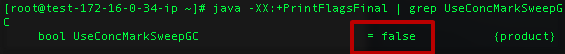
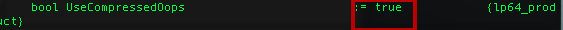
输出里“=”表示使用的是初始默认值，而“:=”表示使用的不是初始默认值，可能是命令行传进来的参数、配置文件里的参数或者是ergonomics自动选择了别的值。
此外，还可以使用jinfo命令显示启动的参数。
- jinfo -flags [pid] #查看目前启动使用的有效参数
- jinfo -flag [flagName] [pid] #查看对应参数的值 这里需要指出的是，当你配置jvm参数时，最好是先通过以上命令查看对应参数的默认值再确定是否需要设置。也最好不要配置你搞不清用途的参数，毕竟默认值的设置是有它的合理之处的。
- 动态设置参数
当Java应用启动后，定位到了是GC造成的性能问题，但是你启动的时候并没有加入打印gc的参数，很多时候的做法就是重新加参数然后重启应用。但这样会造成一定时间的服务不可用。最佳的做法是能够在不重启应用的情况下，动态设置参数。使用jinfo可以做到这一点(本质上还是基于jmx的)。
对于上述的gc的情况，就可以使用以下命令打开heap dump并设置dump路径。jinfo -flag [+/-][flagName] [pid] #启用/禁止某个参数 jinfo -flag [flagName=value] [pid] #设置某个参数
同样的也可以动态关闭。jinfo -flag +HeapDumpBeforeFullGC [pid] jinfo -flag +HeapDumpAfterFullGC [pid] jinfo -flag HeapDumpPath=/home/dump/dir [pid]
其他的参数设置类似。jinfo -flag -HeapDumpBeforeFullGC [pid] jinfo -flag -HeapDumpAfterFullGC [pid] - -verbose:gc 与 -XX:+PrintGCDetails 很多gc推荐设置都同时设置了这两个参数，其实，只要打开了-XX:+PrintGCDetails，前面的选项也会同时打开，无须重复设置。
- -XX:+DisableExplicitGC 这个参数的作用就是使得system.gc变为空调用，很多推荐设置里面都是建议开启的。但是，如果你用到了NIO或者其他使用到堆外内存的情况，使用此选项会造成oom。可以用XX:+ExplicitGCInvokesConcurrent或XX:+ExplicitGCInvokesConcurrentAndUnloadsClasses(配合CMS使用，使得system.gc触发一次并发gc)代替。 此外，还有一个比较有意思的地方。如果你不设置此选项的话，当你使用了RMI的时候，会周期性地来一次full gc。这个现象是由于分布式gc造成的，为RMI服务。具体的可见此链接内容中与dgc相关的：http://docs.oracle.com/javase/6/docs/technotes/guides/rmi/sunrmiproperties.html
- MaxDirectMemorySize 此参数是设置的堆外内存的上限值。当不设置的时候为-1，此值为-Xmx减去一个survivor space的预留大小。
- 由于遗留原因，作用相同的参数
- -Xss 与 -XX:ThreadStackSize
- -Xmn 与 -XX:NewSize，此外这里需要注意的是设置了-Xmn的话，NewRatio就没作用了。
- -XX:MaxTenuringThreshold 使用工具查看此值默认值为15，但是选择了CMS的时候，此值会变成4。当此值设置为0时，所有eden里的活对象在经历第一次minor GC的时候就会直接晋升到old gen，survivor space直接就没用。还有值得注意的一点，当使用并行回收器时，此值是没有作用的，并行回收器默认是自动调整这些参数以求达到吞吐量最大的。此外，即使是使用CMS等回收器，晋升到老年代的age也不是不变的，当某一age的对象的大小达到年轻代的50%时，这个age会被动态调整为晋升年龄。
- -XX:HeapDumpPath 使用此参数可以指定-XX:+HeapDumpBeforeFullGC、-XX:+HeapDumpAfterFullGC、-XX:+HeapDumpOnOutOfMemoryError触发heap dump文件的存储位置。
- -XX:+UseAdaptiveSizePolicy 此参数在并行回收器时是默认开启的，会根据应用运行状况做自我调整，如MaxTenuringThreshold、survivor区大小等。其中第一次晋升老年代的年龄以InitialTenuringThreshold（默认为7）开始，后续会自动调整。如果希望跟踪每次minor GC后新的存活周期的阈值，可在启动参数上增加：-XX:+PrintTenuringDistribution。如果想要可以配置这些参数，可以关闭此选项，但paralle的性能很难达到最佳。其他垃圾回收期则慎重开启此开关。